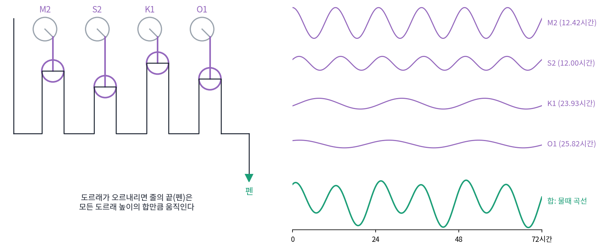
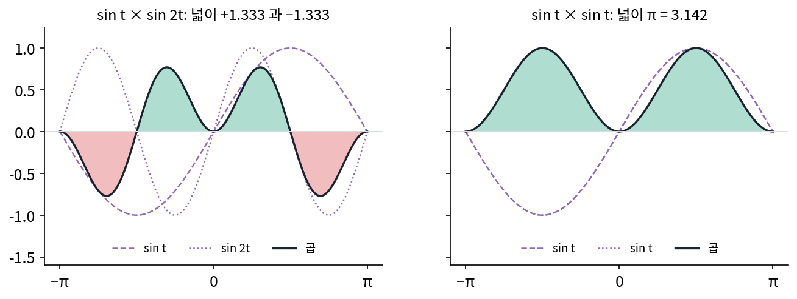

푸리에 급수: 주기 함수를 물결의 합으로
이 장의 물음
칸 세 개짜리 신호는 서로 수직인 축 셋을 골라 축마다 내적 한 번씩으로 다시 적을 수 있었다(기저와 좌표). 그런데 하루 기온, 바다의 물때, 소리의 떨림처럼 값이 이어져 있고 같은 모양을 되풀이하는 신호는 칸이 셋이 아니라 끝없이 많다. 이런 신호에도 서로 수직인 축이 있을까? 있다면 어떤 모양일까?
ML에서도 같은 물음이 나온다. JPEG 으로 세게 줄인 사진을 확대하면 글자와 물체의 테두리 둘레에 물결 같은 얼룩이 번진다. 작은 그림을 크게 키우는 방법에 따라서도 같은 얼룩이 생긴다. 날카로운 경계를 다룰 때 이런 얼룩은 왜 생기고, 왜 테두리에만 생길까?
이 장은 다음 물음에 차례로 답한다.
- 한 주기 위의 함수 둘이 「서로 수직」이라는 말은 무슨 뜻일까? 어떤 물결들이 서로 수직일까?
- 주어진 주기 함수에 물결마다 얼마씩 들어 있는지는 어떻게 구할까?
- 물결을 많이 더하면 원래 함수와 어디서나 같아질까?
- 어떤 함수는 물결 몇 개로 충분하고 어떤 함수는 수백 개로도 모자란다. 무엇이 필요한 물결의 개수를 정할까? 한 점에서 미분을 모아 함수를 펼치는 방법과는 무엇이 다를까?
직교 기저: 한 주기 위의 사인과 코사인
칸 세 개짜리 신호 (3, 1, 2)는 「평균 · 기울기 · 굽음」 세 축으로 다시 적을 수 있었다. 세 축이 서로 수직이었기 때문에, 축마다 신호와 내적을 한 번씩 하면 그 축의 좌표가 나왔다. 이번에는 하루 기온처럼 시각 t에 따라 이어진 값이 주기 2π마다 같은 모양을 되풀이하는 함수를 생각하자. 칸이 셋이 아니라 끝없이 많다. 축도 끝없이 많이 있어야 할 텐데, 서로 수직이고 이 함수들을 다 적을 수 있는 축이 있을까? 애초에 함수 둘이 「서로 수직」이라는 말은 무슨 뜻일까?
역사: 물결 열 개를 도르래로 더한 기계
항구는 물때표가 있어야 배를 드나들게 할 수 있다. 19세기 중반 영국에서는 물때가 달과 해의 여러 주기가 겹친 결과라는 생각이 자리 잡았다. 달이 끄는 주기 12.42시간짜리 물결, 해가 끄는 12시간짜리 물결, 하루 남짓한 주기의 물결 몇 개가 항구마다 다른 크기로 섞여 있다는 것이다. 항구마다 이 크기만 알면 앞날의 물때를 미리 계산할 수 있다. 문제는 계산의 양이었다. 성분 열 개짜리 물때를 한 해 동안 시간마다 구하려면 코사인 값을 8,760 × 10 = 87,600번 구해 더해야 한다.
톰슨(William Thomson, 뒷날의 켈빈 경)은 이 덧셈을 기계에게 맡겼다. 1872년 런던의 기계 제작자 레제(Alexander Légé)의 회사가 그의 설계로 만든 조수 예측기는 성분 열 개를 하나씩 맡는 축 열 개로 되어 있다. 축마다 크랭크가 달려 도르래를 오르내리게 하고, 축끼리는 톱니바퀴로 이어져 저마다 그 성분의 주기로 돈다. 줄 하나가 모든 도르래를 차례로 감고 지나가 끝에 펜이 달려 있으니, 펜의 높이는 도르래 열 개 높이의 합이다. 영국과학진흥협회의 지원으로 만든 이 기계는 한 항구의 한 해 치 물때 곡선을 네 시간쯤에 그렸다(런던 과학박물관 소장). 물결을 더하는 일 자체가 기계 하나가 되었다.

그런데 이 기계는 더하기만 할 수 있다. 항구마다 성분의 크기를 알아내는 거꾸로 된 일, 곧 기록된 물때 곡선에서 「12.42시간짜리 물결이 얼마나 들어 있나」를 구하는 일은 따로 풀어야 했다. 그 일이 되려면 물결끼리 서로 섞이지 않아야 한다.
칸 8개로 잰 sin t 와 sin 2t
한 주기 위의 두 물결 sin t와 sin 2t를 칸 8개로 재 보자. t = 0, π/4, 2π/4, …, 7π/4에서 값을 적으면 아래와 같다.
| 칸 | 0 | 1 | 2 | 3 | 4 | 5 | 6 | 7 |
|---|---|---|---|---|---|---|---|---|
| sin t | 0 | 0.707 | 1 | 0.707 | 0 | −0.707 | −1 | −0.707 |
| sin 2t | 0 | 1 | 0 | −1 | 0 | 1 | 0 | −1 |
| 곱 | 0 | 0.707 | 0 | −0.707 | 0 | −0.707 | 0 | 0.707 |
칸 여덟 개짜리 벡터 둘로 보고 내적(곱의 합)을 내면 0이다. 두 벡터는 서로 수직이다. sin t끼리의 내적은 4, sin 2t끼리도 4다. 칸을 16개, 64개로 늘려도 서로의 내적은 0이고, 자기끼리의 내적은 칸 수의 절반(8, 32)이다.
칸을 끝없이 늘리면 합은 넓이가 된다. 그래서 한 주기 위의 함수 둘의 내적은 곱의 넓이로 정한다.
sin t × sin 2t의 곱을 그려 보면 넓이가 0인 까닭이 보인다. 양수인 넓이 1.333과 음수인 넓이 1.333이 정확히 지워진다. 반면 sin t × sin t는 어디서나 0 이상이라 넓이가 π = 3.142로 남는다.

1, cos t, sin t, cos 2t, sin 2t 다섯 물결의 내적을 모두 구하면 아래와 같다.
| 1 | cos t | sin t | cos 2t | sin 2t | |
|---|---|---|---|---|---|
| 1 | 6.283 | 0 | 0 | 0 | 0 |
| cos t | 0 | 3.142 | 0 | 0 | 0 |
| sin t | 0 | 0 | 3.142 | 0 | 0 |
| cos 2t | 0 | 0 | 0 | 3.142 | 0 |
| sin 2t | 0 | 0 | 0 | 0 | 3.142 |
대각선 밖은 모두 0이다. 주파수가 다르면 늘 0이고, 주파수가 같아도 코사인과 사인은 0이다. 일반 꼴로 적으면 다음과 같다.
상수 1(주파수 0인 코사인)과 주파수 1, 2, 3, …의 코사인·사인을 모은 묶음은 서로가 서로에게 수직인 축들이다. 이렇게 서로 수직인 축을 모은 기저를 직교 기저 (서로 수직인 축의 묶음 / orthogonal basis)라 한다. 축의 길이는 1이 아니다. 자기 자신과의 내적이 상수 1은 2π, 나머지는 π다. 축 길이의 제곱(2π, π)이 다음에 계수를 구할 때 나눗수로 들어온다.
여기서 「한 주기 위에서」와 「정수 주파수」라는 두 단서가 중요하다. 둘 중 하나를 빼면 무슨 일이 생기는지는 아래 문제 2에서 따져 본다.
ML에서: 서로 수직인 특징은 서로의 가중치를 건드리지 않는다
선형 회귀에서 특징 벡터들이 서로 수직이면, 특징을 하나 더 넣어도 이미 있던 가중치가 바뀌지 않는다. 특징 행렬 X의 XᵀX가 대각 행렬이 되어, 가중치마다 따로 구해지기 때문이다. 다항식 특징 x, x³, x⁵ 는 서로 수직이 아니라서 하나를 더할 때마다 모든 가중치가 다시 정해진다. 실제로 얼마나 다른지는 아래 문제 3에서 숫자로 본다.
문제 1. 깜빡이는 전등 둘
전등 A 와 B 가 1초에 한 칸씩 켜지거나(+1) 꺼진다(−1). 4초를 한 주기로 A 는 (+1, −1, +1, −1), B 는 (+1, +1, −1, −1)을 되풀이한다. (가) 칸마다 두 값을 곱해 4초 동안 평균 내면 얼마인가? 이 평균이 0 이라는 것은 두 전등에 대해 무엇을 말하는가? (나) A 끼리 곱한 평균은 얼마인가? (다) 처음 3초만 보고 평균 내면 어떻게 되는가?

(가)는 곱이 (+1, −1, −1, +1)이니까 평균 0이에요. 0이면… 두 전등이 아무 상관이 없다는 거죠? 따로 노는 거요.

4초 가운데 둘이 같은 상태인 칸과 다른 상태인 칸을 세어 볼래요?
같은 칸이 첫째와 넷째로 둘, 다른 칸이 둘이에요. 반반이네요.

그러니까 평균 0은 「같은 때와 엇갈린 때가 정확히 반씩」이라는 뜻이야. (나)는 A끼리면 늘 같으니까 곱이 모두 +1이고 평균 1이야.

(다)는 처음 3초면 (+1, −1, −1)이라 평균이 −1/3이에요. 어, 0이 아니네요. 같은 전등인데 몇 초 보느냐에 따라 엇갈림이 생겼다 없어졌다 해요.

4초 다 보면 0, 3초만 보면 −1/3. 어느 쪽이 두 전등의 성질일까요?

두 전등은 4초마다 되풀이하니까 한 주기를 다 봐야 성질이 나와요. 한 주기에서 잘라 내면 빠진 칸 때문에 평균이 기울어요. 물결의 내적도 한 주기 위에서 잰다고 한 게 이래서구나.

조별 과제에서 두 사람이 한 주씩 번갈아 발표하면 한 달을 봐야 공평하지, 3주만 보면 한 사람이 한 번 더 한 걸로 보이잖아요. 한 달이 한 주기고, 3주가 한 주기에서 잘라 낸 구간이에요.
문제 2. 한 주기, 정수 주파수라는 단서
(가) ∫ cos t · sin 2t dt 를 한 주기 −π ≤ t ≤ π 위에서, 그리고 반 주기 0 ≤ t ≤ π 위에서 구하라. (나) sin 3t 를 자기 자신과 내적하면 얼마인가? 한 주기 평균으로는? (다) 주파수가 정수가 아닌 cos 1.5t 와 cos t 의 내적을 −π ≤ t ≤ π 위에서 구하라. 구간을 −2π ≤ t ≤ 2π 로 넓히면 어떻게 되는가? (위젯 1의 「문제 2 (가) 불러오기」, 「문제 2 (다) 불러오기」로 넓이를 확인해 보자.)
(가)는 주파수가 1과 2로 다르니까 0이야. 반 주기에서도 0이겠지. 곱해서 지워지는 건 똑같으니까.
위젯에서 반 주기만 보기를 켜면… 1.333이 나와요. 0이 아닌데?
한 주기에서 지워지던 음수 넓이가 어디에 있었는지 그림에서 찾아볼래요?

cos t · sin 2t = 2 sin t cos² t니까, 0에서 π까지는 sin t가 양수라 곱이 늘 0 이상이에요. 음수 넓이는 전부 −π에서 0 쪽에 있었어요. 반 주기만 보면 지울 상대가 없어요. 그래서 4/3 = 1.333이 남는구나.
(나)는 sin² 3t의 넓이라 π = 3.142, 평균은 2π로 나눠서 0.5예요.
(다)는 주파수가 1과 1.5로 다르니까 0일 거예요. 아까 다르면 늘 0이라고 했잖아요.

위젯에서 물결 B 를 cos 1.5t로 맞춰 봐요. 그리고 cos 1.5t가 −π에서 π 사이에 몇 번 되풀이되는지 세어 보세요.
2.400이 나와요. cos 1.5t는 한 주기 안에 1.5번 출렁여서 끝이 처음과 안 맞아요. 반쪽 물결이 남는 거네요.

그러니까 「주파수가 다르면 0」은 두 물결이 같은 구간에서 둘 다 정수 번 되풀이될 때만 맞아. 구간을 4π로 넓히면 cos t는 두 번, cos 1.5t는 세 번 되풀이되니까 다시 0이 될 거야. 계산해 보면 정말 0.000이야.

정적분 수업에서 sin을 한 주기 적분하면 0이라고 외웠는데, 반 주기면 2가 나오던 게 바로 이 차이였어.
문제 3. 특징 하나를 더하면
한 주기를 고르게 나눈 점 200 개에서 사각파(앞 반 주기 −1, 뒤 반 주기 +1)에 표준편차 0.3 인 노이즈를 더한 값을 만들었다(씨앗 0). (가) 특징 [sin t, sin 2t] 로 선형 회귀한 가중치가 [1.2338, −0.0031] 이다. 특징 sin 3t 를 더해 다시 회귀하면 앞의 두 가중치는 어떻게 되겠는가? (나) 같은 자료를 x = t/π 의 다항식 특징 [x, x³] 로 회귀하면 가중치가 [2.6957, −2.0425] 다. x⁵ 를 더하면 [3.9104, −7.7088, 5.0978] 이 된다. 둘의 차이는 어디서 오는가? (다) 두 경우의 XᵀX 를 비교하라.
(가)는 특징이 하나 늘었으니 가중치도 다 다시 맞춰지겠죠. 코드로 돌려 보면… [1.2338, −0.0031, 0.4585]요. 앞의 둘이 sin 3t 를 넣기 전 [1.2338, −0.0031]과 소수 넷째 자리까지 같아요.
다항식 쪽은 x와 x³의 가중치가 2.70, −2.04에서 3.91, −7.71로 바뀌었어요. 사인 쪽은 왜 안 바뀌었을까요?
(다)를 보면 돼요. 사인 특징의 XᵀX는 대각선만 100이고 나머지는 0이에요. 점 200개에서 sin끼리 곱한 합이 칸 수의 절반, 서로 다른 sin끼리는 0이니까요. 다항식은 대각선 밖이 40.0, 28.6, 22.2처럼 커요.
XᵀX가 대각이면 정규방정식 XᵀX w = Xᵀy가 어떻게 풀리죠?
줄마다 따로 풀려요. w₁ = (sin t와 y의 내적) ÷ 100처럼 가중치 하나에 내적 하나예요. sin 3t를 더해도 첫째 줄과 둘째 줄은 그대로라 앞의 가중치가 안 바뀌어요. x와 x³은 서로 기울어 있어서, x⁵가 들어오면, x⁵와 겹치는 방향을 나눠 설명하던 x와 x³의 가중치를 처음부터 다시 정해야 해요.

sin 3t의 가중치 0.4585는 사각파의 3번 성분 4/(3π) = 0.4244에 노이즈가 얹힌 거겠네요. 축이 서로 수직이면 하나씩 따로 구해도 된다는 거, 조교님이 문항별 점수는 다른 문항이랑 상관없이 매긴다고 하던 거랑 같아요.